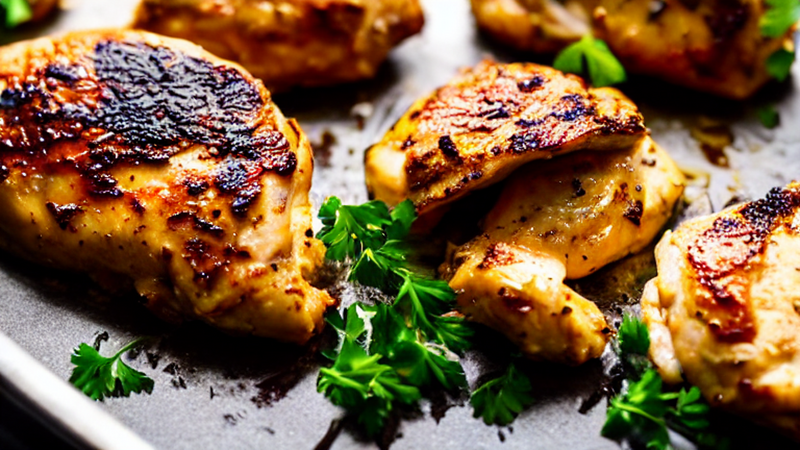
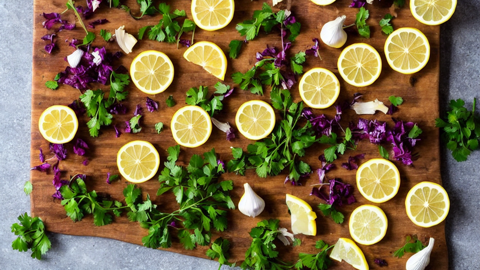
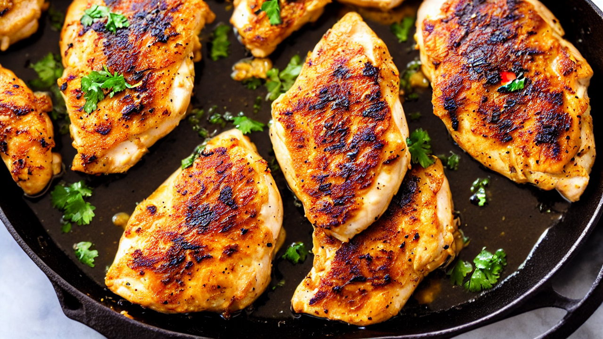
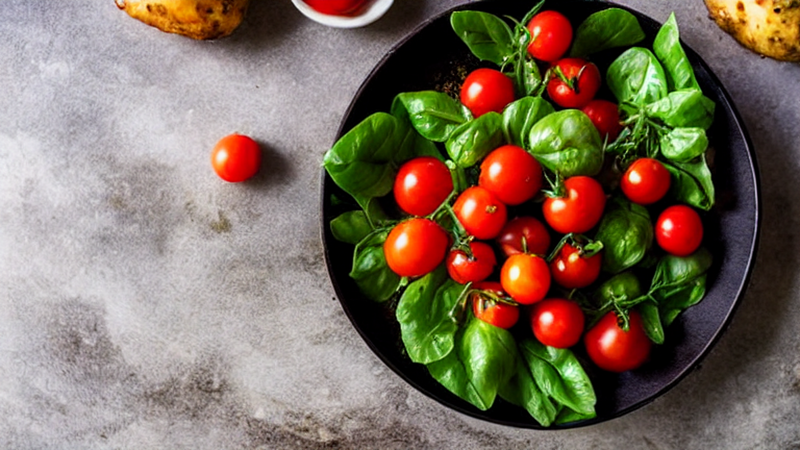
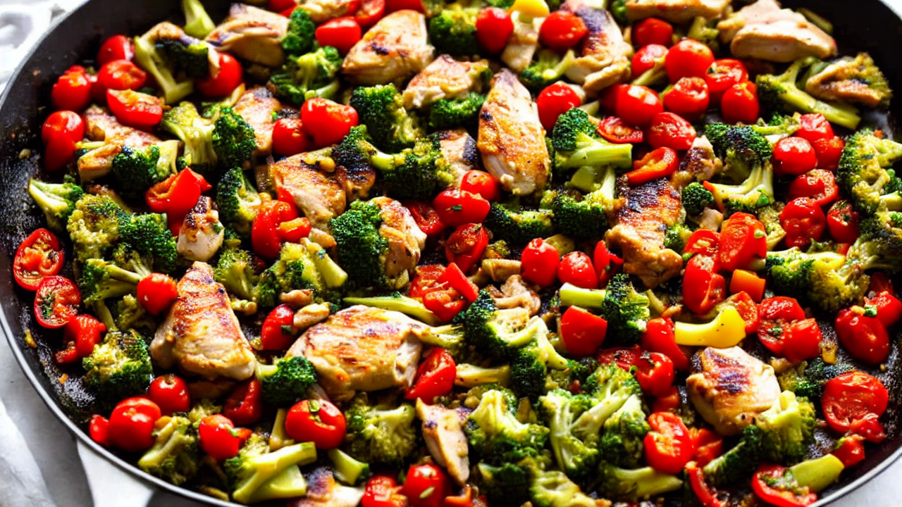
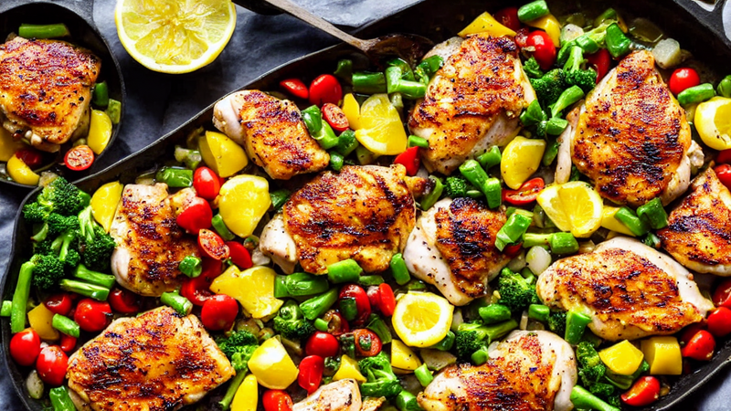
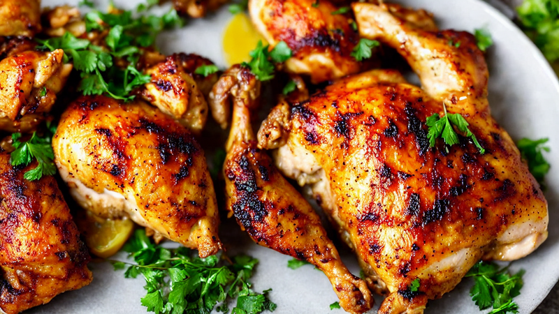
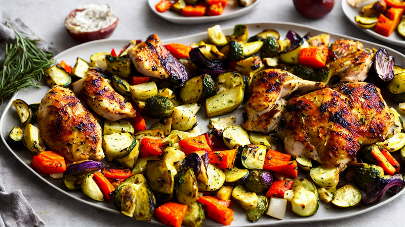

Easy One-Pan Lemon Herb Chicken | 30-Minute Dinner Hack
Transform chicken breasts into a juicy, herb-packed meal in one pan! This lemon herb recipe combines zesty flavors and crispy textures for a quick weeknight win. Perfect for busy cooks who love bold tastes without the hassle.
Ingredients
- boneless chicken breasts
- lemon
- garlic
- olive oil
- fresh herbs like thyme and parsley
- Everything cooks together in one pan!
Instructions

This One-Pan Lemon Herb Chicken is so good, you'll never order takeout again! Let's make a juicy, herb-packed meal in 30 minutes.

Grab boneless chicken breasts, lemon, garlic, olive oil, and fresh herbs like thyme and parsley. Everything cooks together in one pan!

Heat olive oil in a skillet, then sear chicken breasts until golden. Add garlic and lemon slices for that bright, fragrant base.

Sprinkle lemon herb seasoning over the chicken. Add cherry tomatoes and potatoes for a colorful, one-pan medley that cooks to perfection.

Pour in lemon juice and broth, then stir to coat. Let it simmer until the chicken is cooked through and the flavors meld beautifully.

Toss in fresh parsley and lemon zest for a final burst of flavor. Let the dish rest for 2 minutes before serving for juicy results.

Plate the chicken with veggies and drizzle with extra lemon juice. Add a sprinkle of Parmesan for that creamy, savory finish.

Grab your fork and enjoy this restaurant-quality meal made at home! Don’t forget to subscribe for more recipes like this.